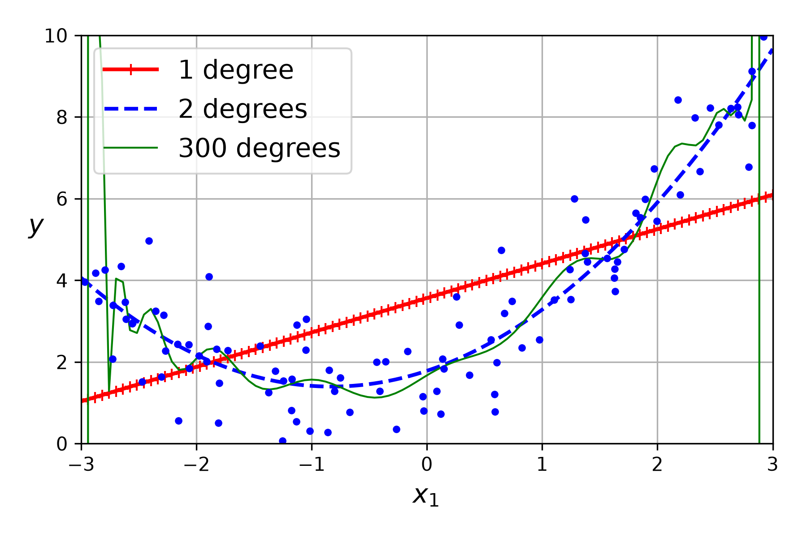
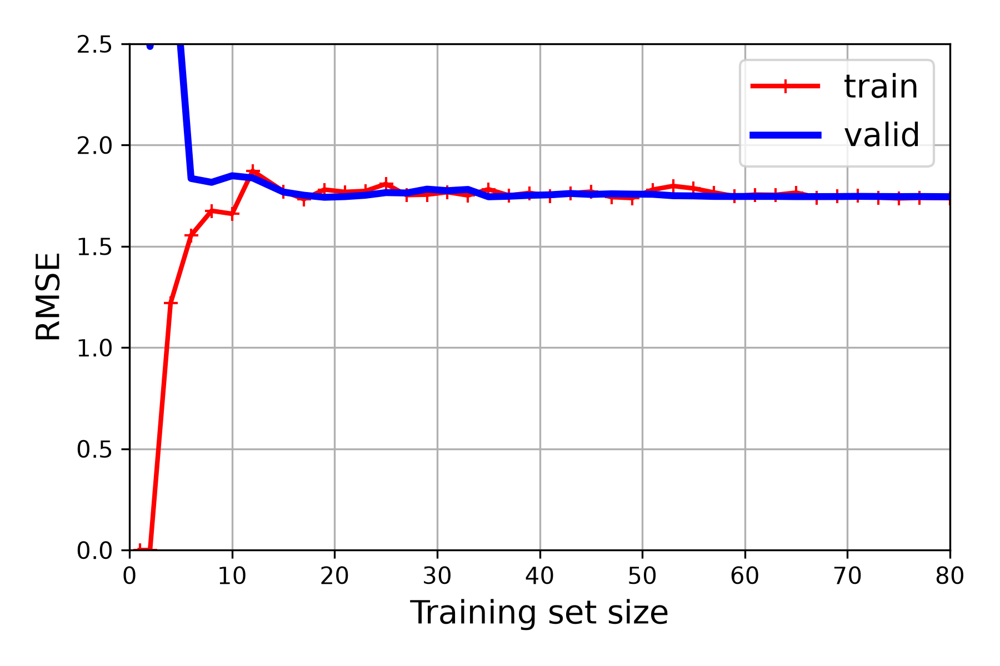
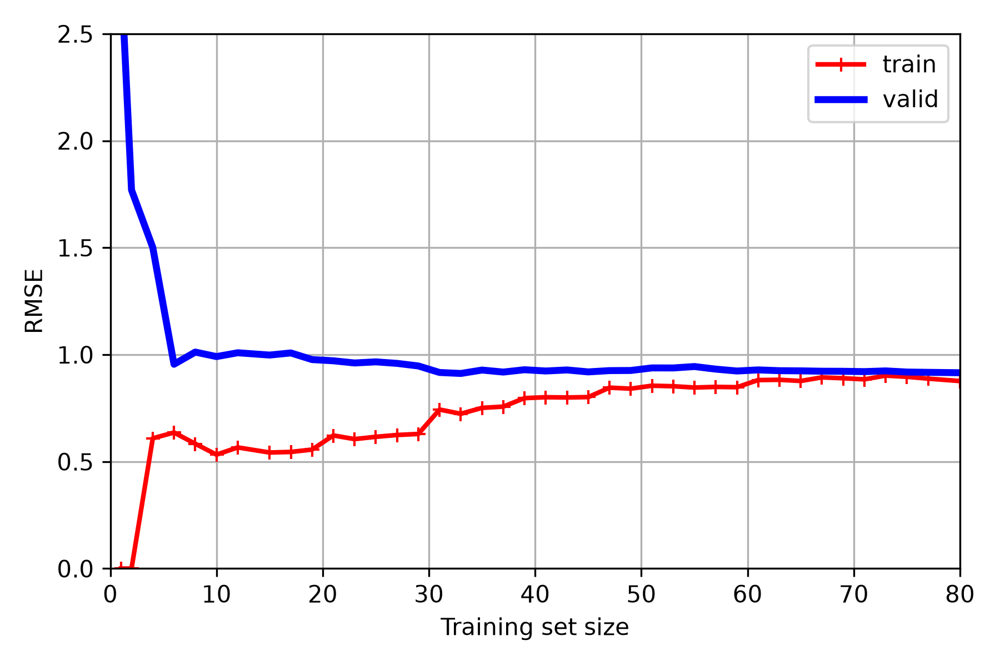
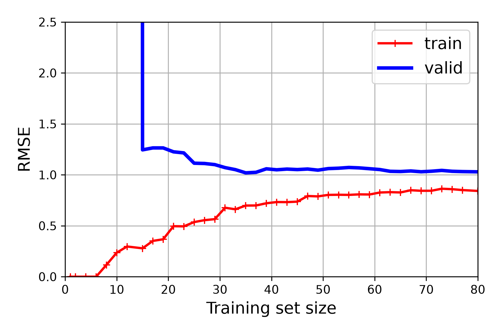
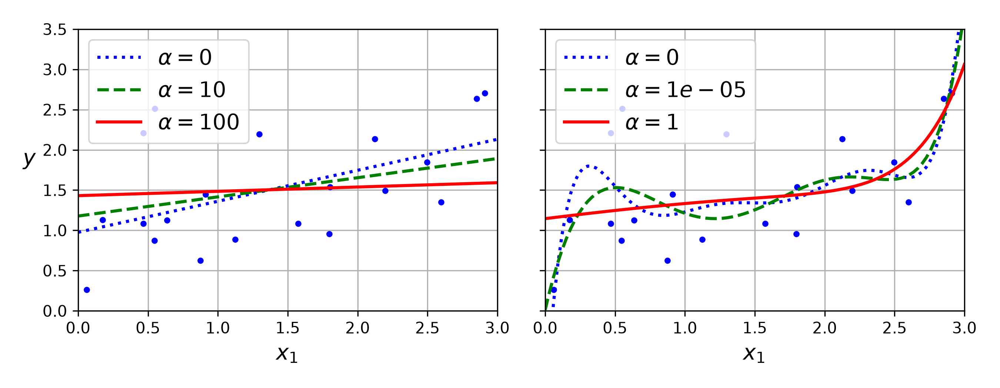
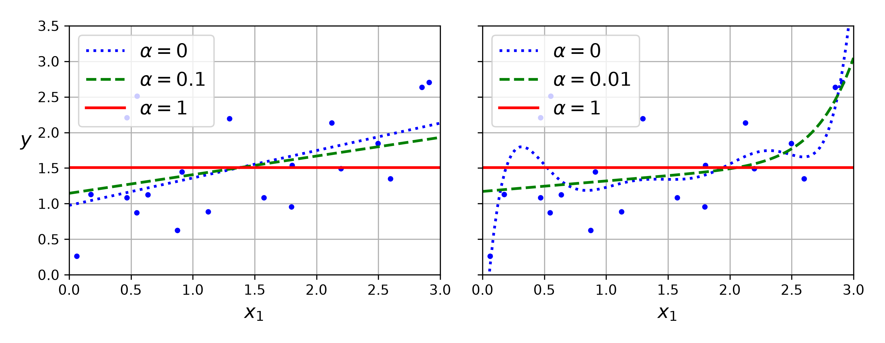

รหัสไฟล์: 04_training_linear_models_th.py | กดปุ่มลูกศรขวา (→) เพื่อเลื่อนหน้าถัดไป
เจาะลึกความต่างของระบบ Syntax และกลไกของภาษาเพื่อช่วยนักพัฒนา C# ในการอ่านโค้ด
⬇️ กดปุ่มลูกศรลงเพื่อดูรายละเอียด ⬇️
| หัวข้อ | สไตล์ C# (Static Typing) | สไตล์ Python (Dynamic Typing) |
|---|---|---|
| บล็อกขอบเขต (Scope) | ใช้ปีกกา { ... } ครอบลูปหรือเงื่อนไข |
ใช้การย่อหน้า (Indentation/4 Spaces) เท่านั้น ห้ามลืมหรือสลับสเปซเด็ดขาด! |
| การประกาศตัวแปร | ระบุชนิดชัดเจน หรือใช้ var: double x = 4.2; |
ไม่ต้องระบุชนิด (Dynamic): x = 4.2 เปลี่ยนชนิดค่าได้อิสระ |
| ยืนยันเวอร์ชัน (Assert) | Debug.Assert(condition); |
คีย์เวิร์ดในภาษา: assert sys.version_info >= (3, 7) (หากเท็จโปรแกรมแครชหยุดรันทันที) |
| หัวข้อ | สไตล์ C# (Traditional) | สไตล์ Python (Expressive) |
|---|---|---|
| ยกกำลังคณิตศาสตร์ | Math.Pow(x, 2) |
X ** 2 (ในโค้ดใช้ยกกำลังฟีเจอร์พหุนาม) |
| เขียนเงื่อนไขสั้น | Ternary: var text = degree > 1 ? "degrees" : "degree"; |
"degrees" if degree > 1 else "degree" |
| ลูปแกะทูเพิล (Unpacking) |
foreach (var (style, width, deg) in list)
|
|
ใน Python การสร้างออบเจกต์โมเดล ML นิยมระบุชื่อพารามิเตอร์เพื่อความชัดเจนโดยไม่ต้องเรียงลำดับ:
# ส่งอาร์กิวเมนต์ผ่านชื่อ (Keyword)
sgd_reg = SGDRegressor(
max_iter=1000,
tol=1e-5,
penalty=None,
eta0=0.01,
random_state=42
)// ส่งผ่านพารามิเตอร์โดยใช้เครื่องหมายโคลอน (:)
var sgdReg = new SGDRegressor(
maxIter: 1000,
tol: 1e-5,
penalty: null,
eta0: 0.01,
randomState: 42
);เรียนรู้การคิดแบบเวกเตอร์ (Vectorization) หลักคณิตศาสตร์คูณเมทริกซ์ และการจัดการมิติอาร์เรย์
⬇️ กดปุ่มลูกศรลงเพื่อดูรายละเอียด ⬇️
การทำนายโมเดลเชิงเส้น ($X_b \theta$) ตั้งอยู่บนฐานของการคูณเมทริกซ์ มาทำความเข้าใจกฎและวิธีคิดด้วยมือก่อนใช้โปรแกรม:
เราจะคูณเมทริกซ์ $A$ และ $B$ ได้ก็ต่อเมื่อ จำนวนคอลัมน์ของตัวตั้ง เท่ากับ จำนวนแถวของตัวคูณ
ตัวอย่าง: เมทริกซ์ขนาด $100 \times 2$ (ฟีเจอร์บวก Bias) คูณกับเวกเตอร์ขนาด $2 \times 1$ ผลลัพธ์สุดท้ายที่ได้จะมีมิติเท่ากับ $100 \times 1$
จับคู่สมาชิกแต่ละตัวของ "แถว (Row)" ในเมทริกซ์แรก คูณกับ "คอลัมน์ (Column)" ในเมทริกซ์หลัง แล้วนำผลลัพธ์มารวมกัน:
# สร้างชุดข้อมูลสุ่ม X และ y พร้อมกัน 100 จุดในสเต็ปเดียวโดยไม่ต้องเขียนลูป!
X = 2 * np.random.rand(100, 1)
y = 4 + 3 * X + np.random.randn(100, 1)@ตัวดำเนินการ @ ทำการคูณเมทริกซ์แบบแถวคูณคอลัมน์ (Dot Product) ตามทฤษฎีทางคณิตศาสตร์:
# inv(X^T * X) @ X^T @ y (คำนวณ Normal Equation)
theta_best = np.linalg.inv(X_b.T @ X_b) @ X_b.T @ y*คำเตือน: ห้ามใช้เครื่องหมาย * ในการคูณเมทริกซ์ เพราะจะเป็นการคูณสมาชิกต่อตำแหน่งแบบ Element-wise
.T : สลับแถวเป็นคอลัมน์และคอลัมน์เป็นแถว (Transpose).ravel() : ยุบเมทริกซ์หลายมิติให้เป็นอาร์เรย์ 1 มิติ (Flat).reshape(row, col) : จัดระเบียบมิติใหม่ เช่น .reshape(-1, 1) จัดเป็นเมทริกซ์แนวตั้งnp.c_ และ np.r_np.c_[a, b] : นำเวกเตอร์สองก้อนมาประกบเชื่อมกันด้านข้าง (คอลัมน์)
np.c_[np.ones(m), X] เติมคอลัมน์เลข 1 ข้างหน้า X เพื่อทำ Biasnp.r_[a, b] : นำเวกเตอร์สองก้อนมาเชื่อมกันด้านบน-ล่าง (แถว)
np.linspace() & np.meshgrid()np.linspace(-3, 3, 100): สร้างจุดตัวเลข 100 จุดไล่ระดับเฉลี่ยระยะทางคงที่สม่ำเสมอตั้งแต่ -3 ถึง 3 เพื่อสร้างเส้นโค้งในกราฟทำนายผลnp.meshgrid(x, y): ผลิตตาข่ายมิติพิกัดแบบ 2 มิติ เพื่อใช้คำนวณจุดทำนายระดับเฉดสีคอนทัวร์แบ่งขอบเขตคลาสทำความเข้าใจการพยากรณ์เชิงเส้นตรงด้วยวิธีหาคำตอบสมการปิดและเปรียบเทียบกับไลบรารีของ Scikit-Learn
⬇️ กดปุ่มลูกศรลงเพื่อดูรายละเอียด ⬇️
เป้าหมายคือการหาค่าน้ำหนักพารามิเตอร์ $\hat{\theta}$ ที่ทำให้โมเดลทำนายได้ใกล้เคียงจุดข้อมูลจริงมากที่สุด:
สูตรนี้หาค่าน้ำหนักพารามิเตอร์ที่ดีที่สุดทางคณิตศาสตร์ได้โดยตรงในสเต็ปเดียว ไม่ต้องทำซ้ำ
ทำไมต้องใช้ Bias Feature ($x_0 = 1$)? เพื่อให้ระบบคูณเมทริกซ์คำนวณค่าจุดตัดแกน Y ($\theta_0$) ได้สะดวกด้วยตัวแปรเดียวกัน
from sklearn.preprocessing import add_dummy_feature
# 1) เติมคอลัมน์ Bias (x0 = 1) ให้กับแถวข้อมูล
X_b = add_dummy_feature(X)
# 2) คำนวณตามสูตรทางคณิตศาสตร์:
theta_best = np.linalg.inv(X_b.T @ X_b) @ X_b.T @ y*คำเตือน: หาก Feature มีจำนวนเยอะมาก เมทริกซ์จะมีขนาดใหญ่ขึ้น และการทำ Inverse จะช้ามากๆ ($O(n^3)$)
การเรียนรู้ผ่านระดับสากลด้วยคลาสสำเร็จรูปของ Scikit-Learn สะดวกกว่าและพร้อมนำขึ้นระบบงาน:
from sklearn.linear_model import LinearRegression
# สร้างโมเดลและป้อนสอนโมเดล (fit)
lin_reg = LinearRegression()
lin_reg.fit(X, y)
# ดูจุดตัดแกน Y และน้ำหนักความชัน
bias = lin_reg.intercept_
coef = lin_reg.coef_
# ทำนายค่าจุดข้อมูลใหม่
predictions = lin_reg.predict(X_new)สคริปต์มีการนำเสนอนิพจน์คำนวณน้ำหนักทางเลือกที่เสถียรกว่าการทำ Inverse แบบปกติ:
ใช้ np.linalg.lstsq() เพื่อคำนวณหาน้ำหนัก:
# เบื้องหลังคำนวณหาค่าต่ำสุดของกำลังสองความคลาดเคลื่อน
theta, residuals, rank, s = np.linalg.lstsq(
X_b, y, rcond=1e-6
)*ความเสถียร: แก้ไขสมการเชิงเส้นได้แม้คอลัมน์ของข้อมูลจะมีตัวแปรเกี่ยวเนื่องกันแบบเกือบสมบูรณ์ (Singular Matrix)
ใช้คำนวณหา Inverse เทียมด้วยตัวดำเนินการ np.linalg.pinv():
# สูตรคำนวณน้ำหนัก: theta = X^+ * y
theta_pinv = np.linalg.pinv(X_b) @ y*คุณลักษณะ: เป็นการคำนวณตรงๆ ด้วยความเสถียรที่สูงกว่าสมการปิดปกติ เหมาะสำหรับการศึกษาโครงสร้างคณิตศาสตร์เชิงเปรียบเทียบในคลาสเรียน
เปรียบเทียบกระบวนการคำนวณและการอัปเดตน้ำหนักของโมเดลตามความลาดชัน 3 ประเภทหลัก
⬇️ กดปุ่มลูกศรลงเพื่อดูรายละเอียดโค้ดแต่ละประเภท ⬇️
การกวาดหาความชันจากทุกๆ จุดข้อมูลพร้อมกันในแต่ละรอบ (Epoch):
# วนลูปทำการเทรนโมเดลแบบ Batch Gradient Descent
for epoch in range(n_epochs):
# คำนวณเวกเตอร์ความชัน (Gradients) จากข้อมูลทั้งหมดในคราวเดียว
gradients = 2 / m * X_b.T @ (X_b @ theta - y)
# ปรับปรุงพารามิเตอร์ Theta โดยขยับไปในทิศทางตรงกันข้ามกับค่าความชัน
theta = theta - eta * gradientsข้อดี: ทางเดินนิ่ง เข้าหาจุดต่ำสุดแน่นอน ข้อเสีย: ล้นหน่วยความจำแรมได้ง่ายมากหากข้อมูลมีจำนวนหลายล้านจุด
สุ่มเลือกข้อมูลทีละแถว และใช้กลไกการปรับลดอัตราการเรียนรู้ให้ค่อยๆ แคบลง (Learning Schedule):
for epoch in range(n_epochs):
for iteration in range(m):
# สุ่มหยิบดัชนีของจุดข้อมูลขึ้นมา 1 จุดแบบสุ่ม
random_index = np.random.randint(m)
xi = X_b[random_index : random_index + 1]
yi = y[random_index : random_index + 1]
# คำนวณค่าความชันเฉพาะจุดข้อมูลนั้นจุดเดียว (ไม่ต้องหารด้วย m ทั้งหมดเหมือน Batch)
gradients = 2 * xi.T @ (xi @ theta - yi)
# คำนวณหาค่า Learning Rate ของสเต็ปปัจจุบันให้ค่อยๆ แคบลง
eta = learning_schedule(epoch * m + iteration)
theta = theta - eta * gradientsสับเปลี่ยนข้อมูล (Shuffle) ป้องกันการล็อกตำแหน่งและหั่นก้อนย่อยขนาด `minibatch_size`:
for epoch in range(n_epochs):
# สับเปลี่ยนข้อมูลทั้งหมดแบบสุ่มทุกรอบป้องกันลำดับส่งผลต่อการเรียนรู้
shuffled_indices = np.random.permutation(m)
X_b_shuffled = X_b[shuffled_indices]
y_shuffled = y[shuffled_indices]
for iteration in range(0, n_batches_per_epoch):
idx = iteration * minibatch_size
xi = X_b_shuffled[idx : idx + minibatch_size]
yi = y_shuffled[idx : idx + minibatch_size]
# คำนวณความชันเฉลี่ยตามขนาดของกลุ่มย่อย
gradients = 2 / minibatch_size * xi.T @ (xi @ theta - yi)
eta = learning_schedule(epoch * n_batches_per_epoch + iteration)
theta = theta - eta * gradientsเรียนรู้การเพิ่มดีกรีเส้นโค้งพหุนาม ระบบท่อส่ง Pipeline และทำความเข้าใจปัญหา Underfitting vs Overfitting ของโมเดล
⬇️ กดปุ่มลูกศรลงเพื่อดูรายละเอียด ⬇️
แปลงมิติเชิงเส้นโดยแตกกำลังเป็นฟีเจอร์ใหม่:
from sklearn.preprocessing import PolynomialFeatures
poly = PolynomialFeatures(degree=2, include_bias=False)
X_poly = poly.fit_transform(X)ในโค้ดทดลองใช้ระดับกำลังสูงถึง degree=300 ทำให้เส้นกราฟคดเคี้ยวพยายามลากผ่านข้อมูลทุกจุดที่เห็นในฝั่งขวา

เส้นทึบสีเขียว (300 degrees) แสดงอาการ Overfitting อย่างรุนแรง
from sklearn.pipeline import make_pipeline
# มัดรวมขั้นตอนเตรียมการและคำนวณโมเดลเข้าด้วยกัน
polynomial_regression = make_pipeline(
PolynomialFeatures(degree=300, include_bias=False),
StandardScaler(),
LinearRegression()
)
polynomial_regression.fit(X, y)สไตล์ C#: คล้ายกับระบบ Middleware หรือท่อไหลประมวลผลฟังก์ชันต่อกัน
การยกกำลังสูงๆ เช่น $x^{300}$ จะผลิตผลลัพธ์มหาศาลทำให้ตัวเลขโอเวอร์โฟลว์ (Numerical Overflow):
StandardScaler() จัดปรับสัดส่วนข้อมูลให้อยู่ในรูป Z-score (ค่าเฉลี่ยเป็น 0 และความเบี่ยงเบนเป็น 1)สองปัญหาพื้นฐานคลาสสิกในการประเมินโมเดลการเรียนรู้เชิงลึก:
เปรียบเทียบลักษณะการทำนายของโมเดลที่ระดับความซับซ้อนต่างกัน (จากรูปในโค้ดทดลอง):
รูปเปรียบเทียบการปรับความซับซ้อน (ดีกรี 1, 2, และ 300)
เส้นตรงสีแดงทื่อ ไม่สามารถโค้งตามจุดข้อมูลจริงได้ โมเดลเรียบง่ายเกินไป (High Bias)
เส้นประสีน้ำเงินโค้งตามแนวโน้มแท้จริงของข้อมูลพาราโบลาได้พอดี มีความเรียบง่ายและทำนายได้ถูกต้องที่สุด
เส้นทึบสีเขียวคดเคี้ยวพยายามวิ่งตัดผ่านจุดรบกวน (Noise) ทุกจุด ส่งผลเสียทำให้คำนวณนอกช่วงพลาดสูง (High Variance)
เปรียบเทียบลักษณะ RMSE ระหว่างการเทรนจริง (Train) และทดสอบ (Valid) เพื่อวิเคราะห์ความเหมาะสมของโมเดล:
เส้นแดง (Train) และสีน้ำเงิน (Valid) วิ่งเข้าหากันอย่างรวดเร็วและนิ่งคงที่ ณ ระดับที่ Error สูงมากทั้งคู่

เส้นแดง (Train) และสีน้ำเงิน (Valid) ลู่เข้าหากันที่ระดับ Error ต่ำ และไม่มีช่องว่างหรือมีช่องว่างที่แคบมาก

เส้นแดง (Train) ลู่ลงระดับเกือบศูนย์ แต่เส้นน้ำเงิน (Valid) ยังสูงและ เกิดช่องว่าง (Gap) กว้างชัดเจน

บีบควบคุมน้ำหนักโมเดลด้วยบทลงโทษแบบ L1/L2 และเทคนิคสั่งปิดการเรียนรู้ล่วงหน้าเมื่อโมเดลเริ่ม Overfit
⬇️ กดปุ่มลูกศรลงเพื่อดูรายละเอียด ⬇️
คือการจงใจเพิ่ม "โทษปรับ (Penalty)" เข้าไปในฟังก์ชันประเมินความสูญเสีย (Cost Function) ของโมเดล เมื่อโมเดลพยายามคำนวณค่าน้ำหนักพารามิเตอร์ ($\theta$) ให้มีขนาดใหญ่จนเกินไป
แทนที่โมเดลจะหาจุดที่ฟิตกับข้อมูลฝึกสอน (Training Data) ได้ 100% มันจะถูกบังคับให้เลือกค่าน้ำหนักที่ "เล็กและเรียบง่ายที่สุด" ควบคู่ไปด้วย
บวกรวมน้ำหนักยกกำลังสอง:
$$\alpha \frac{1}{2} \sum \theta^2$$Ridge(alpha=0.1)บวกรวมค่าสัมบูรณ์น้ำหนัก:
$$\alpha \sum |\theta|$$Lasso(alpha=0.1)ผสมผสานรูปแบบ L1 และ L2:
$$r (L1) + (1-r) (L2)$$ElasticNet(l1_ratio=0.5)วิเคราะห์ความยืดหยุ่นที่เปลี่ยนไปของโมเดลเมื่อปรับไฮเปอร์พารามิเตอร์ควบคุมระดับโทษปรับ ($\alpha$):

เส้นสีน้ำเงินปะ ($\alpha=0$) สั่นสะเทือนแบบไร้การดึงรั้ง (ก่อนทำ) เมื่อเพิ่มค่า $\alpha$ เส้นจะราบเรียบสอดคล้องกับโครงสร้างข้อมูลทั่วไปมากขึ้น (หลังทำ)

สังเกตเส้นสีแดง ($\alpha=1$): Lasso บีบตัวแปรหนักจนหักระดับสัมประสิทธิ์ของฟีเจอร์พหุนามหลายตัวกลายเป็นศูนย์ ได้รูปเป็นเส้นตรงตัดผ่านเฉลี่ยราบเรียบ
แนวทางปฏิบัติในการคัดเลือกสถาปัตยกรรมบทลงโทษให้สอดคล้องกับโจทย์วิศวกรรมข้อมูล:
การเรียนรู้ไปเรื่อยๆ จนค่าความผิดพลาดบน Validation Set มีจุดต่ำสุดแล้วเริ่มดีดกลับ:
for epoch in range(n_epochs):
# ปรับจูนโมเดลทีละรอบผ่านข้อมูล Train
sgd_reg.partial_fit(X_train_prep, y_train)
val_error = get_rmse(X_valid_prep, y_valid)
# หากรอบปัจจุบันพบจุด Error ต่ำสุดใหม่
if val_error < best_valid_rmse:
best_valid_rmse = val_error
# ก๊อบปี้เก็บสถานะโมเดลที่ดีที่สุดไว้
best_model = deepcopy(sgd_reg)ในภาษา Python หากเขียนว่า best_model = sgd_reg:
best_model จะเพี้ยนตามไปด้วยcopy.deepcopy เพื่อสั่งโคลนข้อมูลออบเจกต์ก้อนใหม่ในแรมโดยสมบูรณ์เปลี่ยนจากการทำนายตัวเลขต่อเนื่องเป็นการทำนายประเภทคลาสด้วย Logistic และ Softmax Regression
⬇️ กดปุ่มลูกศรลงเพื่อดูรายละเอียด ⬇️
บีบตัวเลขเชิงเส้นดิบๆ ให้อยู่ในช่วงความน่าจะเป็น 0 ถึง 1 เสมอ:
$$\sigma(t) = \frac{1}{1 + e^{-t}}$$# สมการใน NumPy:
sig = 1 / (1 + np.exp(-t))หากคิดคำนวณโอกาสน่าจะเป็นได้ $\ge 0.5$ ทำนายคลาสเป็น 1
ตัวอย่างการพยากรณ์คลาสสายพันธุ์ดอกไม้ Iris virginica:
คำนวณแจกแจงเปอร์เซ็นต์โอกาสในทุกคลาสรวมกันให้เท่ากับ 1.0:
$$\hat{p}_k = \frac{\exp(s_k(x))}{\sum_{j=1}^K \exp(s_j(x))}$$# เขียนแมนนวลเพื่อความปลอดภัยของมิติ:
def softmax(logits):
exps = np.exp(logits)
# keepdims=True รักษาแถวไม่ให้มิติอาร์เรย์พัง
sums = exps.sum(axis=1, keepdims=True)
return exps / sumsโมเดลจะใช้สถาปัตยกรรม Softmax อัตโนมัติเมื่อคลาสในเฉลยมีมากกว่า 2 ตัวแปร:
# ใช้พิกัด 2 มิติทำนาย 3 สายพันธุ์ไอริส
softmax_reg = LogisticRegression(C=30, random_state=42)
softmax_reg.fit(X_train, y_train)
# พยากรณ์ดอกไม้ขนาด [ยาว 5 ซม, กว้าง 2 ซม]
pred_class = softmax_reg.predict([[5, 2]])
pred_probs = softmax_reg.predict_proba([[5, 2]])การจัดเตรียมโครงสร้างข้อมูลตัวเลขก่อนป้อนลูปคำนวณแมนนวล:
# แปลงคลาสประเภท เช่น [2] ให้กลายเป็นเวกเตอร์ความน่าจะเป็น [0, 0, 1]
def to_one_hot(y):
# np.diag สร้างเมทริกซ์เอกลักษณ์ แล้วสไลด์ตัดตำแหน่งแถวตามดัชนีคลาส
return np.diag(np.ones(y.max() + 1))[y]
# คำนวณปรับแต่งมิติฟีเจอร์ (Standardization)
mean = X_train[:, 1:].mean(axis=0)
std = X_train[:, 1:].std(axis=0)
X_train[:, 1:] = (X_train[:, 1:] - mean) / std
X_valid[:, 1:] = (X_valid[:, 1:] - mean) / stdสูตรการลูปฝึกฝนโมเดลแมนนวลในตอนท้ายของโค้ดสคริปต์:
for epoch in range(n_epochs):
logits = X_train @ Theta # หาผลคะแนนดิบ
Y_proba = softmax(logits) # แปลงเป็นโอกาสน่าจะเป็นด้วยฟังก์ชัน Softmax
# Gradients = X^T * (คำทำนาย - เฉลยจริง)
error = Y_proba - Y_train_one_hot
gradients = 1 / m * X_train.T @ error
# ขยับปรับปรุงพารามิเตอร์เมทริกซ์ Theta
Theta = Theta - eta * gradientsการนำเอาโทษปรับความกว้างน้ำหนักมารวมใน Gradients และการดักสัญญาณหยุดเรียนรู้ล่วงหน้า:
# 1. บวก Gradients โทษปรับแบบกำลังสอง (ไม่ลงโทษส่วน Bias แถวแรก)
gradients += np.r_[np.zeros([1, n_outputs]), 1 / C * Theta[1:]]
# 2. คำนวณ Loss บน Validation Set และเช็ค Early Stopping
Y_proba_valid = softmax(X_valid @ Theta)
loss = -(Y_valid_one_hot * np.log(Y_proba_valid + epsilon)).sum(axis=1).mean()
total_loss = loss + 1 / (2 * C) * (Theta[1:] ** 2).sum()
if total_loss < best_loss:
best_loss = total_loss
else:
# หากรอบปัจจุบันพบจุด Error กลับมาเพิ่มขึ้น ให้สั่งตัดวงจรหยุดสอนงานทันที!
print(epoch, total_loss, "early stopping!")
breakเทียบโครงสร้างเพื่อเป็นแนวทางต่อยอดสำหรับนักศึกษาที่มีพื้นฐานการพัฒนาซอฟต์แวร์ C# / .NET:
| ความต้องการ | คลาสฝั่ง Python (NumPy/Scikit-Learn) | เทียบเท่าใน C# / .NET (ML.NET Ecosystem) |
|---|---|---|
| คณิตศาสตร์และอาร์เรย์มิติ | numpy (เช่น np.linalg.inv) |
MathNet.Numerics หรือ Microsoft.ML.Numeric |
| ฝึกสอนโมเดลเชิงเส้นตรง | LinearRegression / SGDRegressor |
MLContext.Regression.Trainers.Ols() / Sgd() |
| ท่อประมวลผลข้อมูล | make_pipeline() (Pipeline) |
EstimatorChain (การเชนคำสั่งต่อกันด้วย .Append(...)) |
| แสดงผลพล็อตแผนภูมิภาพ | matplotlib.pyplot (plt) |
ScottPlot หรือ OxyPlotประจำหน้าต่างแอปพลิเคชัน |
| การคัดลอกโคลน Object แท้ | copy.deepcopy() |
การทำ Serialization หรือเขียนโค้ด Clone Constructor ด้วยตัวเอง |
ข้อสรุปของอาจารย์: ถึงแม้ภาษาเขียนจะต่างกัน แต่แกนหลักคณิตศาสตร์ของการปรับน้ำหนักโมเดลยังคงเหมือนกัน! เปิดสคริปต์โค้ดแล้วทดลองรันพร้อมจดบันทึกผลได้เลยครับ 🚀